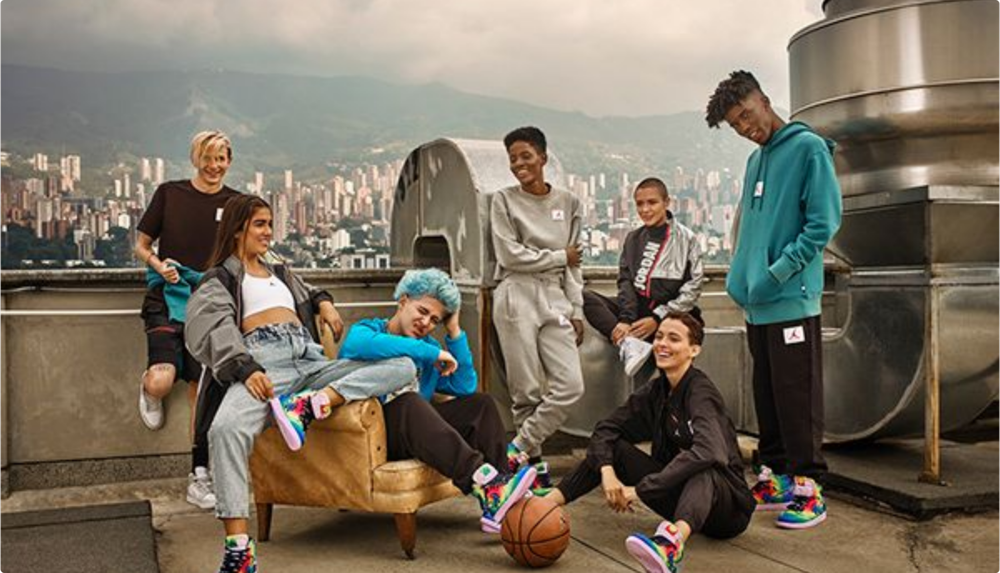

About Us
Kenyamanan dan Gaya dalam Setiap Langkah
Cerita Kami
diNaiki lahir dari keyakinan bahwa sepatu adalah fondasi dari setiap perjalanan. Kami berkomitmen menggunakan bahan berkualitas tinggi dari sol responsif yang dirancang untuk menopang setiap gerakan, hingga material atas yang ringan dan nyaman. Tim desainer kami selalu mengejar inovasi, memastikan setiap koleksi diNaiki menghadirkan perpaduan sempurna antara estetika modern dan performa yang andal.
Meet Our Team

Diva Arviansyah
Founder & CEO

Andra Abhinaya
Lead Designer

Rizal Syakiruddin
Head of Engineering
Rafi Zhevirgi
Community Manager
Apa Kata Mereka
“Saya sudah mencoba berbagai merek sneaker, tetapi baru dengan diNaiki, saya merasakan perpaduan sempurna antara ringan dan bantalan responsif. Kaki saya tidak cepat lelah meski seharian jalan-jalan di kota.”
 Rizal Gosling
Rizal Gosling